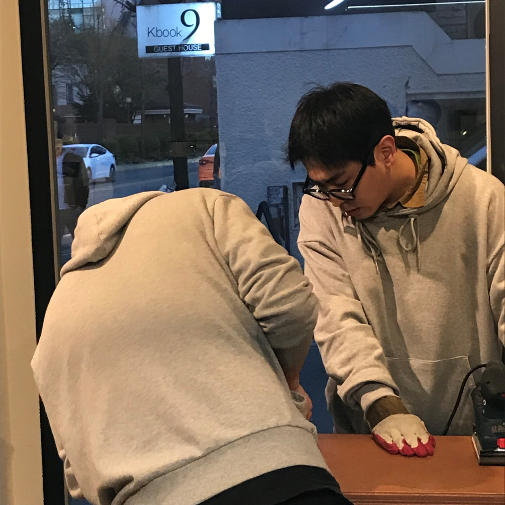
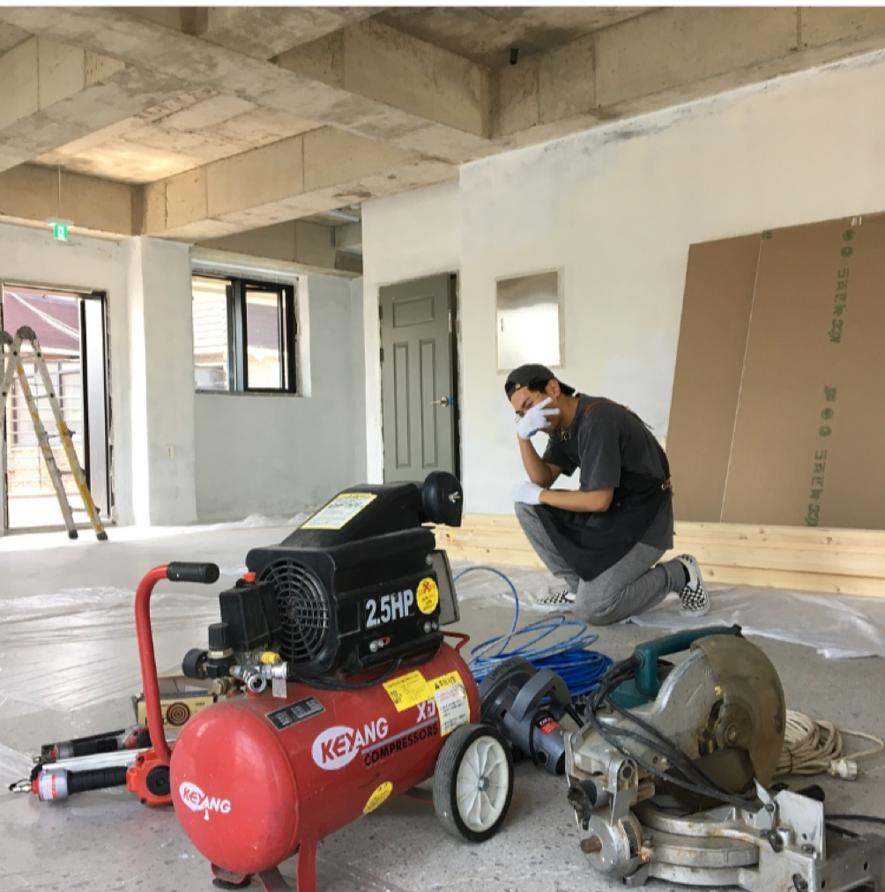
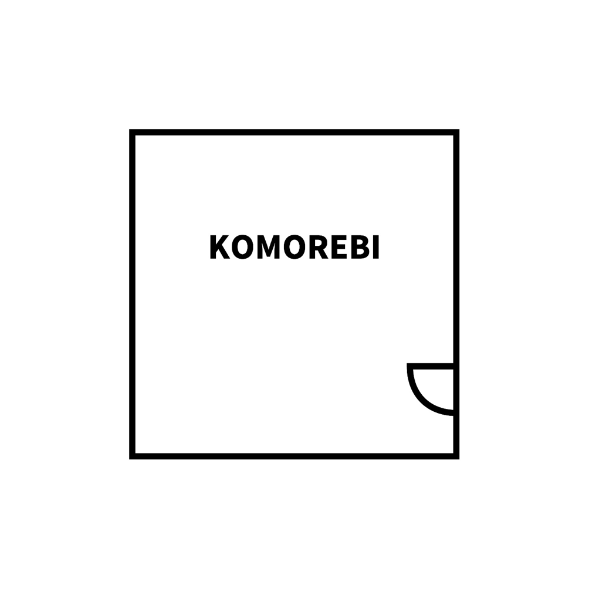
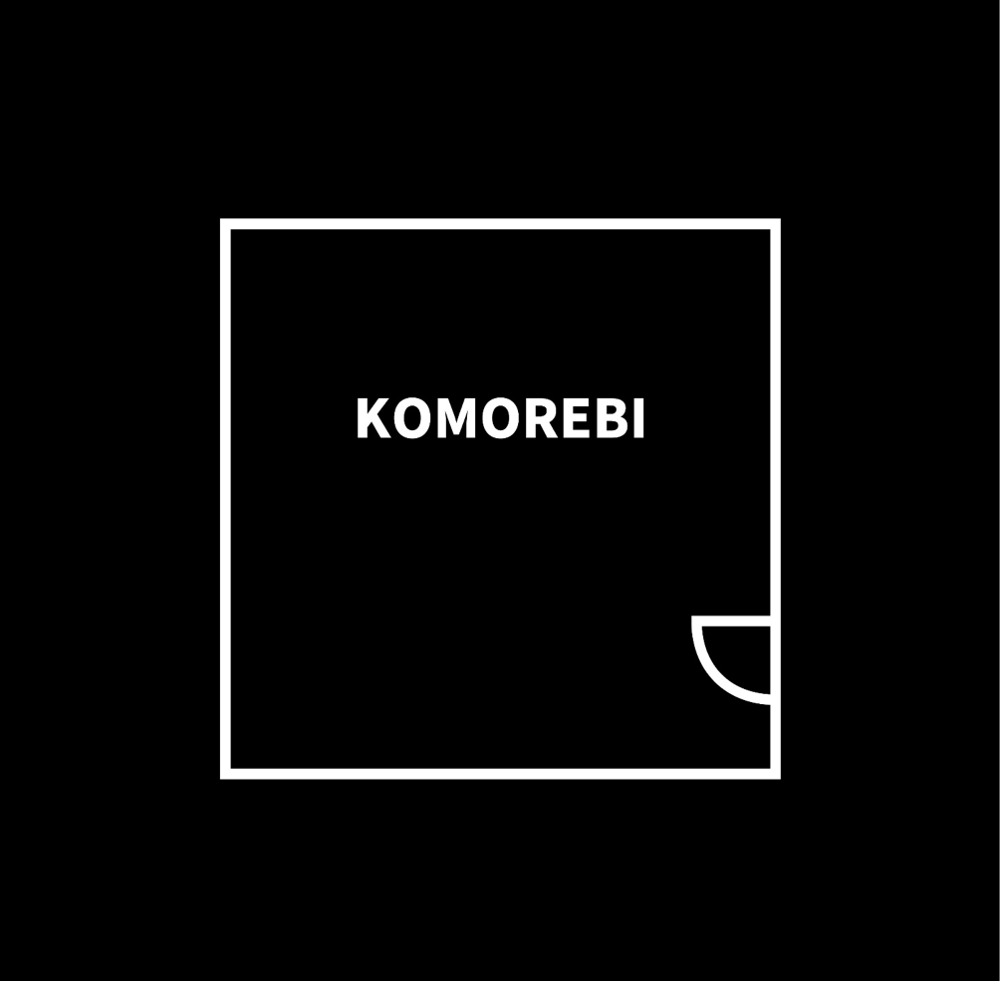

1. 가구를 좋아하게 된 계기나 이유
- 이전엔 공간을 꾸미는 일을 했었습니다. 그 때에, 되돌아보니 공간을 꾸미기보다 그 공간에 들어갈 가구에 더 신경을 쓰고 있더라구요. 공간을 비틀고 바꾸는 것보다 가구를 그 공간에 맞춰 더 이쁘고 자연스럽게 변형시키는 것에 흥미를 느끼면서, 그렇게 가구를 좋아하게 된 거죠.
물론 공간을 꾸미는 걸 이젠 싫어한다거나 그런 건 아닙니다. 멋있는 공간에, 멋있는 가구들로 꾸며져 있다면 더욱더 흥미롭죠.
-20살 이후 혼자 살기 시작하고 매번 집에서 느끼는 생각이 “아 여기에 이런 가구 하나 있었으면 좋을 텐데..” 였어요. 가구를 만드는 능력을 쌓아가며, 제가 원하는 가구를 만들고 디테일을 구현할 수 있게 되니 지금까지 그 매력에 빠져서 좋아하고 있습니다.
-20살 이후 혼자 살기 시작하고 매번 집에서 느끼는 생각이 “아 여기에 이런 가구 하나 있었으면 좋을 텐데..” 였어요. 가구를 만드는 능력을 쌓아가며, 제가 원하는 가구를 만들고 디테일을 구현할 수 있게 되니 지금까지 그 매력에 빠져서 좋아하고 있습니다.

(1) 가구만의 특별함
-제가 가구를 좋아하면서 가장 많이 느낀 매력은, 무엇보다도 ‘누구에게’ ‘어디서’ ‘어떻게’ 사용되느냐에 따라 같은 가구도 다르게 활용된다는 점. 다른 위치에서 다른 매력으로 사람들의 곁에서 자연스럽게 녹아들고 있다는 것입니다. 꼭 의자로 만들어졌다고 의자로 쓰일 필요가 없는 거죠. 본인이 원하는 대로 사용하세요. 그게 가구의 매력이니까요.
가끔 친구들이 “주혁아 이거 테이블인데 선반으로 사용해도 돼?”라는 형식의 질문을 하곤 해요. 그때마다 저는 늘 같은 대답을 합니다. 사용 설명서에 “절대 선반으로 사용하지 마세요!”라고 적혀있지 않는 한 원하는 데로 사용하라고.
(2) 장소와 노래
-딱히 가구와 관련해서 좋아하는 장소와 노래는 없지만 그냥 제가 좋아하는 장소와 노래는 있어요. 전 ‘종로구’를 너무 좋아합니다. 딱히 거창한 이유는 없어요. 만들라면 만들어내겠지만, 단순히 거리가 좋고 분위가 좋습니다. 계절에 따라 바뀌는 거리의 모습도, 냄새도 다 다르구요. 저는 머리가 복잡하거나 너무 바쁘게 살고 있다는 생각이 들면 여행이 아닌 가까운 종로로 갑니다. 서촌, 삼청동, 인사동, 익선동. 구석구석 골목들과 그 분위기 속에서 차분함을 느끼며 많은 새로운 생각들을 얻고 돌아와 생활하며 다시금 나아가는 거죠. 구태여 추천드리고 싶지는 않습니다. 저의 취향이라고 말씀을 드리는 거지 “꼭 가보라”라는 건 아니니까요. 단순히 이 글을 보실 때에 좋아하는 곳을 떠올려 보시는 것도 괜찮을 것 같아요. 내가 어느 길을 동네를 좋아하는지.
*song on the beach- 영화 'Her'의 Ost로 Arcade Fire의 연주곡이다.서정적인 멜로디가 특징.
bill evans - [1929-1980] 수많은 명곡을 남긴 재즈 피아니스트. 담배를 물고 허리를 숙여 피아노를 치는 것은 그의 시그니처인 듯하다.
-노래는 유독 뭘 좋아한다고 말하긴 어려울 것 같네요. 재즈, 블루스, 락, 더해서 대중가요도 힙합도.
거의 모든 장르를 듣고 좋아합니다.
굳이 요즘 듣는 걸로 말씀드리자면 영화 ‘her’의 ost로 있는 *‘song on the beach’ 와 *‘bill evans’ 노래를 많이 듣고 있습니다. 그냥 날씨가 풀리면서 신나는 것보다 차분해지는 거 같아서?
당장에 내일은 다른 노래가 더 듣고 싶어질 수도 있겠죠.

2. 내가 생각하는 가구와 그 속에 담긴 내 삶
아마도 제 경험과 주관에 따라 생긴 생각이다 보니 누군가는 불편하실 수도 있다는 점 양해 부탁드리겠습니다.
-저는 현재 가구를 만들고 있고 믿을 만한 동료와 멋있는 이름을 가진 팀도 있지만 공식적인 활동을 하고 있지는 않습니다. 아마 우리나라의 실력이 나이에 비례한다고 생각과 시선이 이유일 듯해요. 현재 제 나이로 여기에서 경쟁을 하기에는 같은 업종 사람들의 시선이 불편하고 클라이언트의 믿음은 얻기 힘듭니다. 작업할 때는 어린 것이 흠이 되기도 했죠. “어? 난 괜찮던데..”라고 얘기할 수 있겠습니다만. 저는 아니었고, 아직도 아닙니다. 때문에 지금은 잠시 중단하고 밖에서 뛰고 싶어 난리 난 강아지처럼 현관문이 열리기만을 참고 기다리며 달릴 준비를 하고 있습니다.
-가구 시장에선 참 멋있는 가구도, 가끔은 이해할 수 없는 디자인의 가구도 많이 있습니다. 소비되는 가구는, 저의 주변을 보면, 대부분 조립식 가구에 적당한 가격, 디자인은 그럭저럭 불필요한 디자인이 없는 깔끔한 스타일을 사곤 합니다. 가구는 이제 사람의 삶 속에서 아주 자연스럽게, 눈에 너무 들어오지도 않고 그렇다고 너무 안 보이지도 않게 삶 속에서 저희에게 필요한 도구로 자리 잡고 있는 거죠.
그렇기에 제 생각에는 가격이 어느 정도 중요하다고 생각합니다. 그래서 가구를 만들 때도 항상 가격 적정선을 생각하고 디자인을 합니다. 활용도는 물론이고 적당한 가격으로 사람들이 쉽게 다가올 수 있는 브랜드를 만들고 싶은 거죠. 우리 삶 속에서 사용될 물건인데 너무 비싸고 그런 가구보다는 쉽게 접근해서 자연스럽게 사용될 가구가 더 많아지면 하는 바람이에요. 더 좋은 디자인과 활용도로 다가올 수 있는 가격을 갖춘 가구를 위해 많이 생각하고 많은 것을 보면서 느끼고 있습니다. 굳이 가구 분야가 아닌 곳에서도요.
-저는 현재 가구를 만들고 있고 믿을 만한 동료와 멋있는 이름을 가진 팀도 있지만 공식적인 활동을 하고 있지는 않습니다. 아마 우리나라의 실력이 나이에 비례한다고 생각과 시선이 이유일 듯해요. 현재 제 나이로 여기에서 경쟁을 하기에는 같은 업종 사람들의 시선이 불편하고 클라이언트의 믿음은 얻기 힘듭니다. 작업할 때는 어린 것이 흠이 되기도 했죠. “어? 난 괜찮던데..”라고 얘기할 수 있겠습니다만. 저는 아니었고, 아직도 아닙니다. 때문에 지금은 잠시 중단하고 밖에서 뛰고 싶어 난리 난 강아지처럼 현관문이 열리기만을 참고 기다리며 달릴 준비를 하고 있습니다.
-가구 시장에선 참 멋있는 가구도, 가끔은 이해할 수 없는 디자인의 가구도 많이 있습니다. 소비되는 가구는, 저의 주변을 보면, 대부분 조립식 가구에 적당한 가격, 디자인은 그럭저럭 불필요한 디자인이 없는 깔끔한 스타일을 사곤 합니다. 가구는 이제 사람의 삶 속에서 아주 자연스럽게, 눈에 너무 들어오지도 않고 그렇다고 너무 안 보이지도 않게 삶 속에서 저희에게 필요한 도구로 자리 잡고 있는 거죠.
그렇기에 제 생각에는 가격이 어느 정도 중요하다고 생각합니다. 그래서 가구를 만들 때도 항상 가격 적정선을 생각하고 디자인을 합니다. 활용도는 물론이고 적당한 가격으로 사람들이 쉽게 다가올 수 있는 브랜드를 만들고 싶은 거죠. 우리 삶 속에서 사용될 물건인데 너무 비싸고 그런 가구보다는 쉽게 접근해서 자연스럽게 사용될 가구가 더 많아지면 하는 바람이에요. 더 좋은 디자인과 활용도로 다가올 수 있는 가격을 갖춘 가구를 위해 많이 생각하고 많은 것을 보면서 느끼고 있습니다. 굳이 가구 분야가 아닌 곳에서도요.
3. 홍주혁이라는 사람
-상당히 민폐를 싫어합니다. 제가 민폐를 받는 걸 싫어해서인지 주는 것 또한 남들보다 좀 더 예민하게 행동합니다. 길을 걸어 다닐 때도, 출퇴근 대중교통에서도 무의식중 행동으로 나타날 비매너적인 행동을 항상 생각하고 매너를 갖춘 채 살아가려고 노력하는 중입니다. 가구를 시작하고 가구에 영향을 받은 부분이 없다고는 못하겠습니다. 내가 만들고자 표현하자고 하는 부분을 신경을 쓰는 삶을 살다 보니 더욱더 예민한 성격을 가지고 살게 된 거죠.
개인적으로 저는 많은 사람들이 우리가 원하는 세상에서 살 때에 조금 더 매너를 의식하면서 살면 좋지 않을까 생각합니다. “아무도 안보니까 - 해도 되겠지?” 하는 마인드보다는 조금 더 아름다운 현실과 더 좋은 공간을 위해 각자가 천천히 노력하는 것처럼 말이죠.
-어떤 가구가 늘 항상 이쁘다거나 어떤 것이 유행이라고는 할 수 없을 겁니다. 스스로가 생각하고 스스로에게 필요한 가구가 곧 이쁜 것이고 유행일 테죠. 절대적인 정답은 없습니다.
저와 저희 팀 komorebi는 여러분의 공간에서 어디서든 함께 자연스럽게 어울릴 가구를 만들 겁니다. 집에서 또는 산속에서 한강에서 바다에서 어디서든 당신과 어울릴 수 있는 가구, 좋은 색감과 디테일로 불필요한 디자인을 빼고 좀 더 오래 친숙한 친구처럼 있을 수 있는 가구, 평소에는 모르고 살았지만 나에게 정말 필요했던 가구처럼 말이죠. 모두를 만족시킬 수 없겠지만 조금이나마 많은 사람들을 위해 더 많이 노력할 계획입니다. 언젠가 komorebi라는 이름의 가구가 당신의 공간에 들어서길 바라면서 읽어주신 모든 분들에게 진심으로 감사함을 전합니다.
개인적으로 저는 많은 사람들이 우리가 원하는 세상에서 살 때에 조금 더 매너를 의식하면서 살면 좋지 않을까 생각합니다. “아무도 안보니까 - 해도 되겠지?” 하는 마인드보다는 조금 더 아름다운 현실과 더 좋은 공간을 위해 각자가 천천히 노력하는 것처럼 말이죠.
-어떤 가구가 늘 항상 이쁘다거나 어떤 것이 유행이라고는 할 수 없을 겁니다. 스스로가 생각하고 스스로에게 필요한 가구가 곧 이쁜 것이고 유행일 테죠. 절대적인 정답은 없습니다.
저와 저희 팀 komorebi는 여러분의 공간에서 어디서든 함께 자연스럽게 어울릴 가구를 만들 겁니다. 집에서 또는 산속에서 한강에서 바다에서 어디서든 당신과 어울릴 수 있는 가구, 좋은 색감과 디테일로 불필요한 디자인을 빼고 좀 더 오래 친숙한 친구처럼 있을 수 있는 가구, 평소에는 모르고 살았지만 나에게 정말 필요했던 가구처럼 말이죠. 모두를 만족시킬 수 없겠지만 조금이나마 많은 사람들을 위해 더 많이 노력할 계획입니다. 언젠가 komorebi라는 이름의 가구가 당신의 공간에 들어서길 바라면서 읽어주신 모든 분들에게 진심으로 감사함을 전합니다.
0. Komorebi


코모레비의 뜻은 “무성한 나뭇잎 사이로 비치는 햇빛”이라는 말입니다. 저희는 누군가의 삶의 사이에 들어가 자연스럽게 편하게 녹아들 수 있는 가구를 추구합니다.
(가구에 비친 홍주혁,홍주혁에 비친 가구)
(가구의 홍주혁)
(가구에 홍주혁)